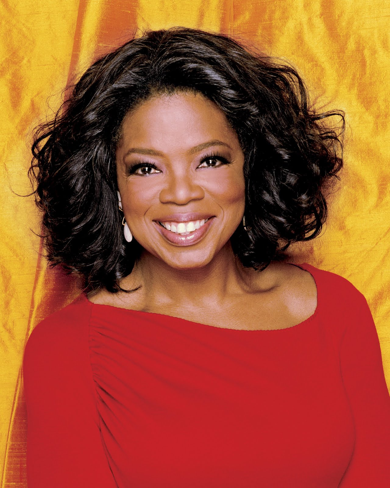

This is a website dedicated to the existence of Oprah Winfrey. Here we honor Mrs. Winfrey's accomplishments.
Oprah has done a lot of great things in her life. For more informatin, check out a list of her biggest accomplishments
For some background information, this network for Oprah Winfrey fan's was unofficially created on November 11, 2017 by Stephanie Pridemore. She is the founder and currently the only member.
Oprah Winfrey was born on January 29, 1954 in Kosciusko, Missippi. Oprah had a rough upbringing that involved abusive family members and poverty. As a teenager she moved to Tennessee and was offered a job co-anchoring the local evening news. This kickstarted her entertainment and media career. In 1983, Winfrey moved to Chicago and began hosting a very low rated morning talk show. Within a couple of months of hosting this show, Oprah brought up it's rating incredibly. This proves her talent in the media industry. In 1986, Winfrey signed a contract with King World for her own television show. This show was a daily afternoon show and was broadcast nationally as The Oprah Winfrey Show. She quickly became the number-one daytime talk show in America. This was a big accomplishment and Oprah broke down many barriers in the media world since she is both a female and African American.
The last episode of The Oprah Winfrey Show aired on May 25, 2011. In 2011, Oprah also became the CEO of The Oprah Winfrey Network which is an American television channel. This channel aired on January 1st, 2011 and its programming mainly consists of marathon runs of television shows. Since ending her renowned show, Oprah has also written many publications including a memoir that is to be released this year.